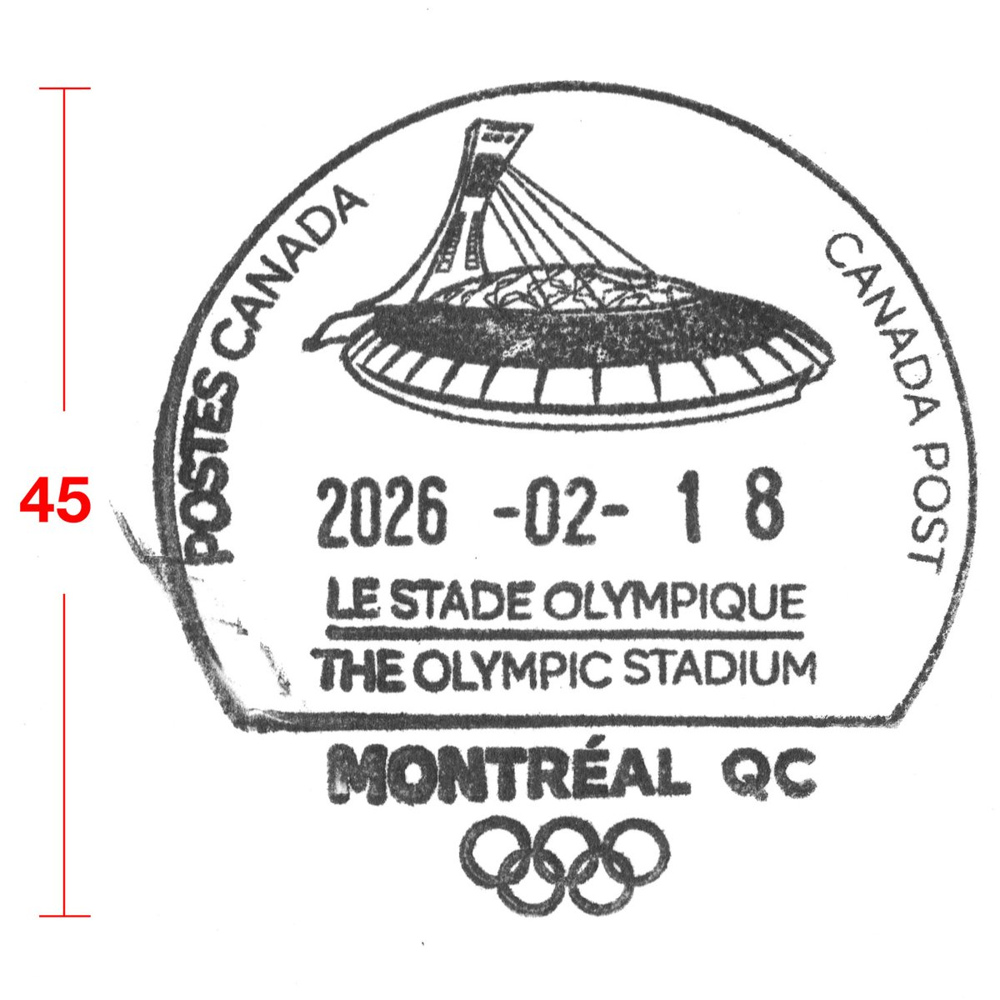

BP Montréal Rosemont pictorial cancel
Le Stade Olympique – Olympic Stadium · Stadium (new)
- Status
- Active
- Run dates
- 2026-02-18 to 2036-12-31
- Design
- "LE STADE OLYMPIQUE / OLYMPIC STADIUM"; Olypic Stadium with the 5-ring logo of the Olympics
- Ink colour
- Black
- Designer
- Unknown
- Post office
- BP Montréal Rosemont
3151 Rue Masson
Montreal, QC
H1X 1P0 - Subjects
- architecture, stadium, sports, olympics, logo
- Notes
- The Olympic Stadium is nicknamed 'The Big O'.
Collect it by mail. Send your stamped covers, with a stamped return envelope, to the post office address above (check the notes first). How to collect pictorial cancels by mail · en français
 BP Montréal RosemontStadium (old)
BP Montréal RosemontStadium (old)